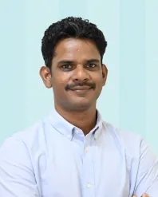
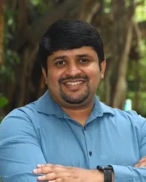
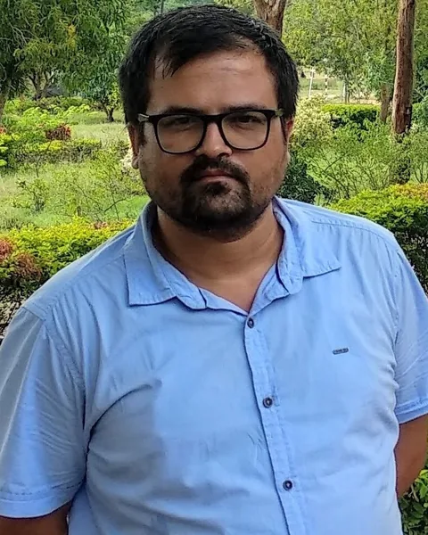
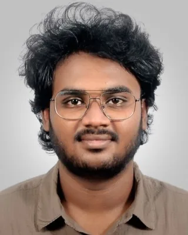
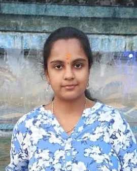

01 / MAT
Materials
Developing next-generation sustainable materials from coal, industrial by-products, and other waste streams for applications in energy, infrastructure, and advanced manufacturing. Research spans high-performance composites, carbon and graphenic materials, critical-material recovery, and materials for energy storage and clean-energy technologies.
Matter transformed
- projects
- 4
- themes
- 3
- investigators
- 7
MAT.1
Coal to Advanced Carbon Materials
MAT-01
Coal-Derived Bulk and 2D Graphenic Materials for Advanced Electrodes and Membranes: Enablers for Sustainable Solar-Water Nexus
CoalBulk and 2D graphenic materialsElectrodes and membranesSolar-water nexus
Team: Prof. Tiju Thomas, Dr. Ravi Shankar, Mr. Sandeep Kumar, Mr. Adithyan T.R, Ms. Divyasri, Ms. Robin RathiProf. Tiju ThomasCIL organisations: MCLNCLMAT-02
Coal to Futuristic Materials: Bipolar Plate, Carbon Paper and Carbon Felt for Energy Applications
CoalCarbon precursorsBipolar plate, carbon paper, carbon feltEnergy applications
Team: Prof. Kothandaraman Ramanujam, Dr. Karthik N, Dr. Sarthak Mishra, Dr. Sumit Nafria, Dr. Venkatesan N, Ms. Santhoshini MProf. Kothandaraman RamanujamCIL organisations: CIL


MAT.2
Composites
MAT-03
Sustainable Polymer Composites Using Coal as Additives
CoalCoal additivesPolymer matrixSustainable composites
Team: Prof. Ethayaraja Mani, Prof. Abhijit Deshpande, Dr. Palaniselvam T, Mr. Shubham Jaiswal, Mr. Srinivasan RProf. Ethayaraja Mani, Prof. Abhijit Deshpande, Dr. Palaniselvam TCIL organisations: CIL


MAT.3
Circular Economy
MAT-04
Recovery of Valuable Minerals and Metals from Solar Panels and Battery Recycling
Spent batteries and solar panelsHydrometallurgical extractionCritical metalsRemanufactured Li-ion batteries
Team: Dr. Nitin Muralidharan, Dr. Sankha Karmakar, Dr. Indumathi Ilango, Mr. Lakshmi Narayana Manickavasagam, Mr. Abraham Samuel ThangaduraiDr. Nitin Muralidharan, Dr. Sankha KarmakarCIL organisations: CILNCL


People in Materials
Faculty Investigators

Prof. Abhijit Deshpande
Principal Investigator

Prof. Ethayaraja Mani
Principal Investigator

Prof. Kothandaraman Ramanujam
Principal Investigator

Dr. Nitin Muralidharan
Principal Investigator

Dr. Palaniselvam T
Principal Investigator

Dr. Sankha Karmakar
Principal Investigator

Prof. Tiju Thomas
Principal Investigator
Research Team

Dr. Indumathi Ilango
Associate Research Scientist

Dr. Karthik N
Associate Research Scientist

Dr. Ravi Shankar
Associate Research Scientist

Dr. Sarthak Mishra
Associate Research Scientist

Mr. Shubham Jaiswal
Post-Doctoral Researcher

Dr. Sumit Nafria
Post-Doctoral Fellow

Mr. Sandeep Kumar
Research Associate

Dr. Venkatesan N
Research Associate

Mr. Abraham Samuel Thangadurai
MS Scholar

Mr. Adithyan T.R
PhD Scholar

Ms. Divyasri
PhD Scholar

Mr. Lakshmi Narayana Manickavasagam
PhD Scholar
Ms. Santhoshini M
PhD Scholar

Ms. Robin Rathi
Project Associate
Mr. Srinivasan R
Project Associate
News & Events
- 23–25 Jul 2026SustainX 2026: Circularity in Energy, Earth and EnvironmentEvent
- Jun 2026Field visit to Bharat Coking Coal LimitedField visit
- Jun 2026Field visit to Central Coalfields LimitedField visit
- 17 Apr 2026Official logo and website launchedNews
- Apr 2026Field visit to Mahanadi Coalfields LimitedField visit